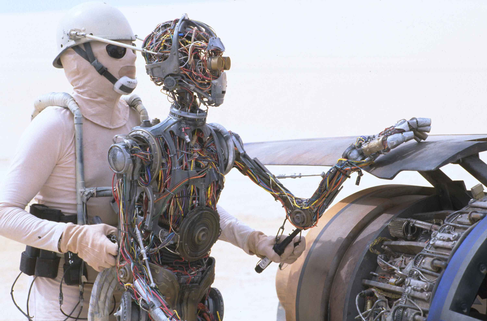
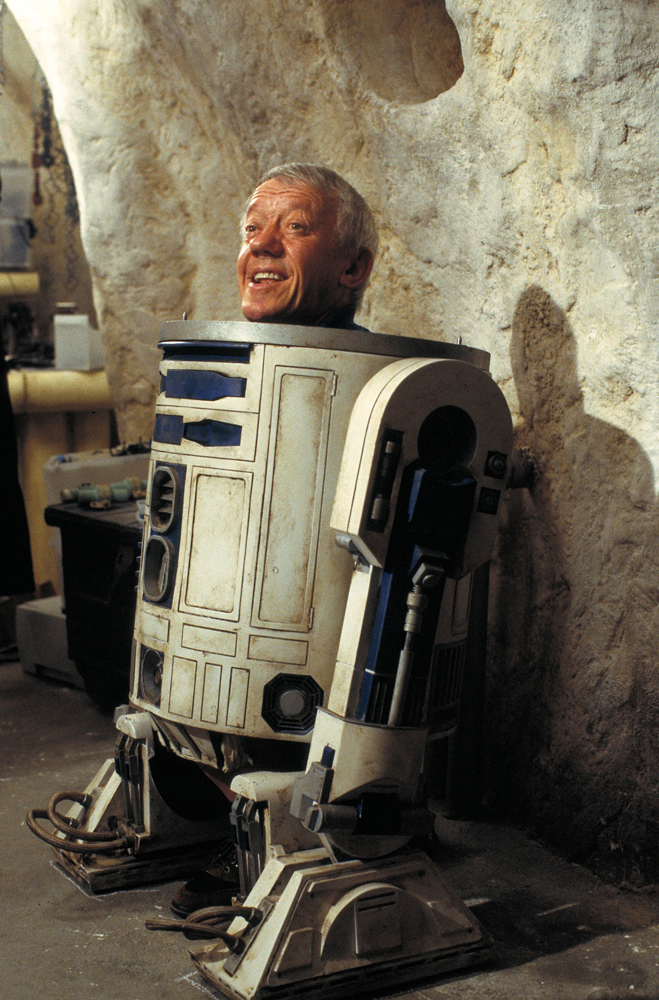

- Experience the heroic action and unforgettable adventures of
- Star Wars: Episode I - The Phantom Menace.
- See the first fateful steps in the journey of Anakin Skywalker.
- Stranded on the desert planet Tatooine after rescuing young Queen Amidala
- from the impending invasion of Naboo, Jedi apprentice Obi-Wan Kenobi
- and his Jedi Master Qui-Gon Jinn discover nine-year-old Anakin, a young slave unusually strong in the Force.
- Anakin wins a thrilling Podrace and with it his freedom as he leaves his home to be trained as a Jedi.
- The heroes return to Naboo where Anakin and the Queen face massive invasion forces
- while the two Jedi contend with a deadly foe named Darth Maul.
- Only then do they realize the invasion is merely the first step in a sinister
- scheme by the re-emergent forces of darkness known as the Sith.


- C-3PO (See-Threepio)
- C-3PO longs for more peaceful times, but his continued service to the Resistance
- and his knowledge of more than seven million forms of communication
- keeps the worry-prone droid in the frontlines of galactic conflict.
- Programmed for etiquette and protocol, Threepio was built by a young Anakin Skywalker, and has been a constant companion to astromech R2-D2.
- R2-D2
- A reliable and versatile astromech droid, R2-D2 has served Padmé Amidala, Anakin Skywalker, and Luke Skywalker
- in turn, showing great bravery in rescuing his masters and their friends from many perils.
- A skilled starship mechanic and fighter pilot's assistant, he has an unlikely but enduring friendship with the fussy protocol droid C-3PO.
